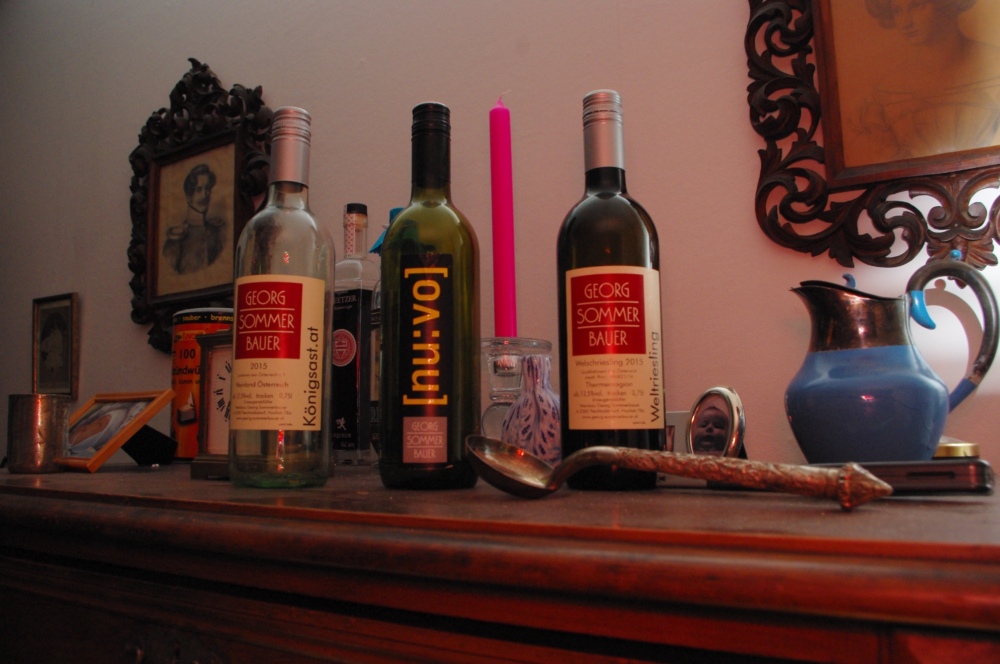

winetasting

Facebook ist für alles mögliche nützlich. Meistens verschwendet man seine Zeit um durch die Likes und Shares seiner virtuellen Freunde zu scrollen und merkt vielleicht rechtzeitig, dass sich alles wiederholt, was man vor Wochen oder Jahren gemocht hat.
Als passionierte Weintrinkerin ist meine Frau in einer Facebook Gruppe, in der der ein oder andere Wein im Tausch den Besitzer wechselt. Man muss seinen Horizont ja erweitern.
Eben in dieser Gruppe wurde ihr kürzlich ein Probierpaket angeboten, einmalig kostenfrei und gegen Porto ausgewählte Weine zu testen und ein Feedback zu geben.
Wir hätten zwar nicht gedacht, dass es klappt, aber nach einigen Tagen war ein Paket von Georg Sommerbauer aus Österreich auf dem Weg zu uns.
Wir haben uns sehr gefreut über die Weine und uns dann entschlossen, mit unseren Freunden eine kleine Weinprobe zu veranstalten. Fünf Zungen schmecken eben mehr als zwei.
Die Theorie besagt, dass es zur Weinbewertung unterschiedliche Kriterien gibt, weshalb dass 5 Punkte, 20 Punkte, oder 100 Punkte Schema in Frage kommen.
Im wesentlichen unterscheiden sich die Bewertungsschemen aber nicht viel, außer, dass sie andere Gewichtungen von Farbe, Klarheit, Geruch, und Geschmack zu einer Gesamtnote zusammenfassen.
Wir haben uns für das 20 Punkte Schema entschieden, weil es mit nicht all zu viel Rechnerei verbunden ist, die Bewertungskriterien recht einfach und einprägsam sind. Was bei 1 Promille von Vorteil ist, denn Wein ausspucken halte ich für Verschwendung, sofern er gut ist.
Der Wein war da, die Tabelle war schnell gebaut, und gedruckt, also fehlte nur noch der Termin. Aber auch das stellt keine Hürde dar.
Am 11.2. war es dann soweit und wir konnten folgende Weine von Georg Sommerbauer gemeinsam probieren.
• Welschriesling 2015
Thermenregion
trockener Qualitätswein aus Österreich
13,5 vol.
• Königsast.at 2015
Weinland Österreich
trockener Landwein aus Österreich
12,5 vol.
• [nu:vo] Neuburger 2016
Termenregion
trockener Qualitätswein aus Österreich
11,5 vol.
Weinproben sind insofern kompliziert, da jeder Teilnehmer andere Vorlieben hat und eventuell auch andere Bewertungsmaßstäbe ansetzt. Deshalb ist die Bewertung auch rein Subjektiv zu betrachten. Der eine Bewertet grundsätzlich alle Weine etwas besser, der Andere ist grundsätzlich etwas kritischer. Was auch der Grund ist, weshalb ich die Zahlen nicht veröffentlichen werde. Außerdem ging es weniger um die exakte Bewertung, als um das gemeinsame Beisammen sein, Sinnieren und Austauschen über den Wein. Wir sind weder große Weinkritiker, Kenner oder Sommeliers. Das Bewertungsschema hat aber insofern geholfen, dass man sich bewusst dem Wein zuwenden konnte und die Aufmerksam auf das Ereignis gelenkt wurde. Besser, als hätten wir die Flaschen einfach so nacheinander auf den Tisch gestellt.
Insgesamt sind alle Weine gut angekommen. Bevor wir uns der allgemeinen Obstsalatbeschreibungen widmeten, kam an dem Abend die Frage auf, wie uns die Gestaltung der Flaschen gefällt, um dann nach dem Probieren eine Antwort zu finden, zu welcher Gelegenheit der Wein passt. Das Auge trinkt bekanntlich mit und ist häufig der Grund, für den ein oder anderen Gelegenheitskauf. Wobei man sich nicht trügen lassen sollte. Wie ich schon mehrfach festgestellt habe, sind gute Weine oft mit grausamen Etiketten ausgestattet.
Der Welschriesling war der erste Wein, den wir an diesem Abend verkostet haben. Wie auch der Königshaus ist das Etikett klar gestaltet. Das Logo des Winzers Georg Sommerbauer ist einprägsam, sieht gut aus und die verwendete Schriftart gefällt mir. Allerdings fanden einige den verwendeten Rotton nicht optimal.
Die Traube des Weines steht rechts, vertikal daneben und lockert das Etikett etwas auf. Einzig die Anordnung der vorgeschriebenen Angaben, wie Qualitätsstufe, Volumen und Alkoholgehalt und Winzer, wären meiner Meinung nach auf einem zweiten Etikett auf der Rückseite schöner, da sie das Hauptetikett etwas auflockern würden. So wie es ist wirkt es etwas gedrungen. Beim [nu:vo] war das auch so umgesetzt. Dort fanden wir das grau des Winzerlogos und rückwandigen Etiketts aber farblich nicht so passend zum Gesamteindruck. Das kräftige Rot das Logos würde dem Wein einen besseren ersten Eindruck verleihen, der Besser zum Geruch und Geschmack des Weins gepasst hätte. Insgesamt ist das Design der Flasche vom [nu:vo] ansprechend.
Aber zurück zum Welschriesling. Wie bei den anderen Weinen, war an der Farbe und Klarheit nichts auszusetzen. Der Geruch erinnerte ein wenig an Tannennadeln und Karamel. Der Geschmack war kräftig, intensiv und Klar, fast ein wenig blumig, und hatte eine ausgewogene Süße, weshalb er von einigen der Teilnehmer als Frauenwein bezeichnet wurde. Die Säure war intensiv, und leicht scharf. Insgesamt ein schöner Trinkwein für den Alltag.
Der Königsast wirkte wie ein frischer reiner Sommerwein. Der Geruch im ersten Eindruck schwer zu beschreiben. Aber wie der Geschmack, der gegensätzlich zum Geruch kräftigen, aromatisch war, hatte der Wein auf er Nase und der Zunge eine leichte, aber nicht aufdringliche grasige Note. Was wohl auch der Grund für die erste Assoziation eines Sommerweins war, den den man bei einem schönen Barbecue in der freien Natur genießt. Ich jedenfalls könnte mir den Wein gut dazu vorstellen.
Als letzten Wein haben wir den Neuburger getrunken. Zwar gefiel vielen die Gestaltung der Flasche am Besten. Geschmacklich hat der Wein aber nicht alle überzeugt. Vom Geruch wirkte der Wein süßlich blumig. Im Mund war der Wein aber nach den ersten beiden herausragenden Weinen etwas flach, was wohl daran lag, dass wir die Weine nicht kannten. Heute würde ich sie in einer anderen Reihenfolge probieren.
Von der ersten Runde war noch ein Wenig über, so dass alle den Welschriesling noch einmal gekostet haben. In der Rückschau war der Wein zu Anfang vermutlich etwas zu kalt, und wurde von allen nachträglich anschließend besser bewertet.
Insgesamt hatten wir einen schönen Abend, haben uns Gedanken über Wein und die Welt gemacht, die ich hier aber nun nicht auch noch ausbreiten möchte. Was will man mehr. Ein großer Dank auch an Herrn Sommerbauer für das Probierpaket und den schönen Abend, den wir mit unseren Freunden hatten.